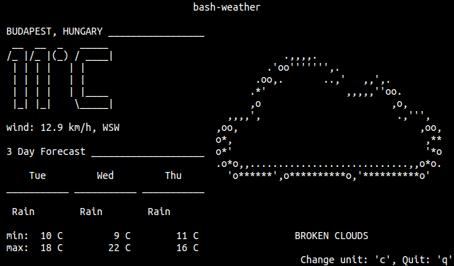
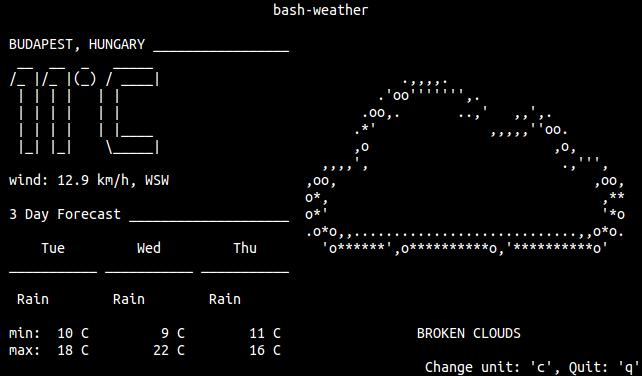

Csak röviden, tömören: elkészült a múltkor beharangozott bash-weather.

Megtalálható a bash.sidenote.hu-n, de elsődlegesen a GitHub-on.
Csak röviden, tömören: elkészült a múltkor beharangozott bash-weather.

Megtalálható a bash.sidenote.hu-n, de elsődlegesen a GitHub-on.
Folytatom a teljesen értelmetlen, ámde bonyolultabbnál bonyolultabb shell scriptek írását. Most egy időjárásjelentő script van soron. Íme a mockup:

A script úgy működik, hogy a gép IP címe alapján lekéri a jelenlegi tartózkodási helyünket (freegeoip.net), majd az OpenWeatherMap-ről leszedi a jelenlegi időjárási adatokat, valamint az előrejelzést. Ez eddig nem volt para, csak XML-t kellett parsolni, ami Bash-ben némi Perl regexp grep-pel simán megoldható.
Viszont némi segítségre volna szükségem a nagy ASCII képeket illetően. Művészi véna hiányában nem vagyok jó ilyenek „rajzolgatásában”, ezért olyasvalakit keresek, aki elkészítené a szükséges ASCII képeket. Az OpenWeatherMap API/Weather Codes oldalon, az Icon List szekcióban megtalálható, hogy milyenek kellenek:
Ráadásul, hogy mindezt nehezítsem, ezekre 40×16 karakter (40 oszlop, 16 sor) méretben volna szükségem.
Help, I need somebody,
Help, not just anybody,
Help, you know I need someone,
Help!
A bash-gorillas után itt a „legújabb” shell scriptem, a bash-life. Igazából tavaly nyáron írtam, de csak most tettem rendbe a kódot.
Így néz ki, természetesen karakteres képernyőn:
A bash-life egy Bash-ben írt Game of Life szimulátor. Hogy mi az a Game of Life, a Wikipédiáról megtudható:
Az életjátékot (angolul: The Game of Life) John Conway, a Cambridge Egyetem matematikusa találta ki. Játékként való megnevezése megtévesztő lehet, mivel „nullszemélyes” játék; és a „játékos” szerepe mindössze annyi, hogy megad egy kezdőalakzatot, és azután csak figyeli az eredményt. Matematikai szempontból az ún. sejtautomaták közé tartozik. A játék egyes lépéseinek eredményét számítógép számítja ki […]
A négyzetrács mezőit celláknak, a korongokat sejteknek nevezzük. Egy cella környezete a hozzá legközelebb eső 8 mező (tehát a cellához képest „átlósan” elhelyezkedő cellákat is figyelembe vesszük, feltesszük hogy a négyzetrácsnak nincs széle). Egy sejt/cella szomszédjai a környezetében lévő sejtek. A játék körökre osztott, a kezdő állapotban tetszőleges számú (egy vagy több) cellába sejteket helyezünk. Ezt követően a játékosnak nincs beleszólása a játékmenetbe. Egy sejttel (cellával) egy körben a következő három dolog történhet:
- A sejt túléli a kört, ha két vagy három szomszédja van.
- A sejt elpusztul, ha kettőnél kevesebb (elszigetelődés), vagy háromnál több (túlnépesedés) szomszédja van.
- Új sejt születik minden olyan cellában, melynek környezetében pontosan három sejt található.
Szóval, ezen szabályok alapján működik a bash-life is. A játék indítása után a négyzetrácson a nyíl gombokkal lehet navigálni, space-szel lehet egy sejtet életre kelteni/kinyírni, az „s” billentyűvel indítható a szimuláció, „q”-val pedig bármikor ki lehet lépni.
Előkövetelmény Bash ≥ 4.2, ncurses-bin és minimum 80×6 méretű terminál (ez utóbbi még változhat). A kód elérhető GitHub-on, a futtatáshoz pedig a következőket kell terminálba bepötyögni:
További fejlesztések:
Bugreportot küldhettek mailen, akár diffet is, de jöhetnek a pull request-ek is GitHub-on.
5. Retro video- és kvarcjáték kiállítás
Inkább képes beszámoló lesz ez, mintsem leírnám mi volt. Annyit mégis, hogy jó volt látni, ahogy a kisgyerekek élvezettel tolták a Wizard of Wor-t, a Super Mario-t, vagy a Pong-ot.


A képekért köszönet Rednek.
Ezt írtam legutóbb:
A következő nagy projekt a Gorillas játék Bash változata. Hosszú lesz megírni, és egészen biztos vagyok benne, hogy fájdalmasan lassan fog futni, de akkor is… Jó lesz!
Nem volt hosszú, vagy nehéz megírni, és nem fut „fájdalmasan lassan” sem (ez persze géptől függ), viszont tényleg jó lett.

Előkövetelmény Bash ≥ 4.2, ncurses-bin, bc és minimum 80×22 méretű terminál. A kód elérhető GitHub-on, a futtatáshoz pedig a következőket kell terminálba bepötyögni:


További fejlesztések:
max_speed, wind_value beállítása a játék indításakor getopts használatával (hétvégén vagy jövő héten megírom);A hátralevő fejlesztések ellenére már használható a cucc. Viszont ne habozzatok írni, ha találtok bugot, elérhetőségem a Rólunk oldalon. (Diffeknek örülnék a legjobban.)
#!/bin/bash
Az utóbbi időben mindenféléket írogatok, Bash-ben. Hogy miért shell script? Egyszerűen azt is mondhatnám, miért ne, de igazából arról van szó, hogy élvezem ennek a nyelvnek a használatát. Adatstruktúrából nincs sok, van tömb, asszociatív tömb és kb. ennyi, nincs objektum, nincs beépített lebegőpontos aritmetika. :) Igazi kihívás valami bonyolultabb problémát shell scriptben megírni, mégis előfordul, hogy a megoldás egész hatékony.
Ismét felmerül a kérdés, hogy miért próbálok bonyolult dolgokat shell scriptben megcsinálni, mikor azokra vannak más, bejáratott programozási nyelvek, metódusok. Egyszerűen azért mert szívás. Folyton workaroundokban kell gondolkodni, különböző trükköket kell bevetni, gondolkodtat, és szeretem feszegetni a határokat. Emellett ott van még a teljes userland, amit aztán úgy használok, ahogy csak akarok. A megoldás természetesen nem a leggyorsabb, néha fájdalmasan is lassú lehet, viszont shell scripteket könnyedén és gyorsan lehet írni.
Létrehoztam egy oldalt, ahol közzétettem néhány scriptemet: http://bash.sidenote.hu/
Eddig a következőket tettem fel:


Minden script GNU GPL v3-as licenccel van ellátva. Hogy a licenc mit enged és mit nem, megtaláljátok a shell script oldalon. További scriptek várhatók, pl. amint lesz időm szépen bekommentezem, és kiteszem a Bash-ben írt Game of Life szimulátoromat, mely az alábbi képre kattintva működés közben is megtekinthető. VIGYÁZAT, MÁSFÉL MEGÁS ANIMGIF!

A következő nagy projekt a Gorillas játék Bash változata. Hosszú lesz megírni, és egészen biztos vagyok benne, hogy fájdalmasan lassan fog futni, de akkor is… Jó lesz!

Csak néhány videó, kép és animáció, amik érdekesek lehetnek. Remélem nem kell mondanom, hogy a képek kattintásra nagyobbak lesznek.
Az SDK-ra leghamarabb hétvégén tudok pillantást vetni. Lehet, hogy arról is ejtek majd pár szót.

Hands-on videók az engadgettől, és a Verge-től:
App ikonok:

Kérdés persze, hogy ezek közül melyek a natívak, és melyek azok amik csak webappok. Skype?
Infografikák:


Animációk:


{kind=link}